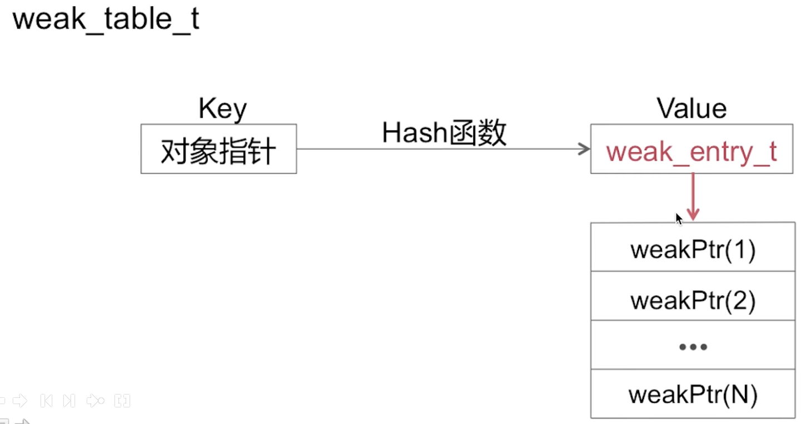

数据结构()
Overview
本文介绍散列表方式实现的内存管理所涉及的内存结构。
- Spinlock_t
- RefcountMap
- weak_table_t
Spinlock_t
- Spinlock_t是"忙等"的锁
- 适用于轻量访问
忙等：指的是如果当前锁已被其他线程获取。那么，当前线程会不断探测这个锁是否已被释放。如果有被释放，自己第一时间获取这个锁。所以，自旋锁是一种忙等的锁。
Usage：
信号量。当他获取不到这个锁时，会把线程休眠。等到其他线程释放这个锁时，来唤醒当前线程
RefcountMap(引用计数表)
引用计数表是用哈希表实现。通过哈希算法(包括：插入与查找)计算数组位置，避免循环遍历操作，从而提高效率。
- weakly_referenced:标识是否有弱引用。1:有；0:无
- deallocating:当前对象是否在dealloc
- RC:存储对象的引用计数值。获取值需向右偏移两位
弱引用表
弱引用表实际也是哈希表。

weak_entry_t weak_entry_t为结构体数组